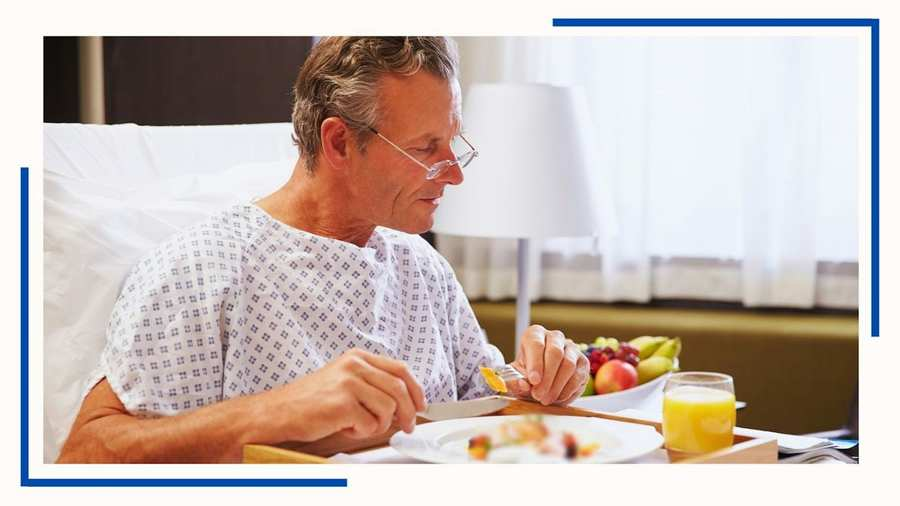
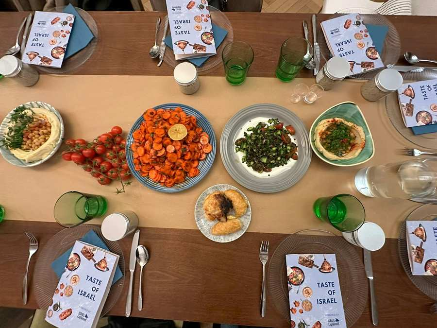
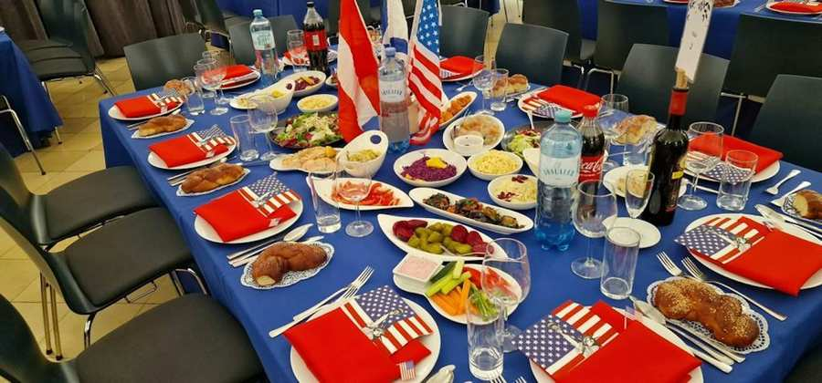

Rabbinat

Kantorenkonzert - Informationen zu getrennten Sitzbereich für Frauen und Männer
Beim Kantorenkonzert im Wiener Stadttempel gibt es in der 1. Galerie getrennte Sitzbereiche für Männer und Frauen.

Judentum verstehen
Monatliche Vortragsreihe mit Rabbiner Schlomo Hofmeister

Koscher in Spitälern und Reha-Einrichtungen für Pessach und das ganze Jahr
In allen öffentlichen Wiener Spitälern sowie in den meisten religiösen und privaten Spitälern und Reha-Zentren in Wien werden auf Wunsch der Patien...

Wina über das Mischpachot-Programm des Rabbinats
Mischpachot nennt sich ein Angebot für Familien, das der scheidende Oberrabbiner Jaron Engelmayer vor rund fünf Jahren etabliert hat. Ziel war u...

Koscher essen in Wien
Wien verfügt über eine hervorragende Infrastruktur mit koscheren Restaurants und Geschäften.

Der Wiener Eruv
Seit 2012 ist der vor der Nazizeit existierende Eruv wieder in Wien. Informationen zum Eruv in Wien finden Sie hier.
Judaism in a Drop“: Ein Jahr Wissen, Austausch und Gemeinschaft
„Judaism in a Drop“: Neues IKG-Format zu Wissen, Austausch und jüdischer Gemeinschaft seit November 2023.

Schabbestisch - Gemeinsam Schabbat feiern
Der „Schabbestisch“ ist eine Initiative der IKG Wien und findet s.G.w. einmal im Monat statt. Wir laden alle Interessentinnen und Interessenten ein...
Das Rabbinat begleitet Sie bei allen Stationen des Lebens und berät Sie gerne in Fragen der Halacha, rituellen Fragen oder in persönlichen Krisensituationen. Dabei betreut das Rabbinat auch Soldaten, Häftlinge, Kranke und Trauernde. Darüber hinaus inspiziert das Rabbinat den jüdischen Religionsunterricht.
Die Rabbiner bieten auch Vorträge beziehungsweise Schiurim an und pflegen Kontakte mit Rabbinaten in anderen Ländern sowie interkonfessionelle Kontakte.
Kontakt zum Rabbinat
Für Terminvereinbarungen oder Fragen können Sie das Sekretariat des Rabbinats kontaktieren unter:


Projekte im Rabbinat

Mischpachot
Jüdische Familien planen im Rahmen von Mischpachot gemeinsame Aktivitäten wie Ausflüge, Kurse oder Feiertags-Erlebnisse.
Mehr
Schabbestisch
Der „Schabbestisch“ ist eine Initiative der IKG Wien und findet s.G.w. einmal im Monat statt. Wir laden alle Interessentinnen und Interessenten ein, gemeinsam in gemütlicher und anregender Atmosphäre den Freitagabend zu verbringen und zu feiern!
MehrBBMC - Bar und Bat Mizwah Club
Der Bar- und Bat Mizwah Club steckt voller Überraschungen! Komm und erfahre mehr über Dich, über Deine Familie, Deine Wurzeln, Deine jüdische Identität, Deine Vergangenheit und Zukunft.
Mehr
Judaism in a Drop
Der Tempelvorstand des Wiener Stadttempels lädt herzlich zu einem Glas Wein und gemeinsamen Lernen.
Mehr
Rabbinatsgebühren
| Bezeichnung | |||
|---|---|---|---|
| IKG-Mitglied | mit Tempelkarte | Nicht-Mitglied | |
| Beschneidung durch Mohalim der IKG | keine Gebühr | keine Gebühr | |
| Bar/Bat Mizwa | 180,00 | 180,00 | |
| Trauung: Vorbereitung (unabhängig von Ort der Chuppa) | 360,00 | 360,00 | |
| Trauung: Kosten außerhalb Sprengel pro angefangenem Tag | 750,00 | 750,00 | |
| Anmietung Chuppa (vom Stadttempel oder mobil) | 250,00 | 100,00 | 750,00 |
| Bestätigungen des Rabbinats | keine Gebühr | keine Gebühr | 160,00 |
| Bestätigungen zusätzl. Recherche pro Stunde | keine Gebühr | keine Gebühr | 160,00 |
| Kaution Gemeindezentrum oder Stadttempel | 500,00 | 500,00 | 500,00 |
| Miete Gemeindezentrum | 700,00 | 700,00 | 700,00 zzgl. Gebühr |
| Miete Stadttempel | 1.200,00 | 1.000,00 | 1.200,00 zzgl. Gebühr |
| Bearbeitungsgebühr für Anmietungen | keine Gebühr | keine Gebühr | 420,00 |
Der Tarif für Gemeindemitglieder gilt bei Beitragswahrheit.
Zedaka
Bei den verschiedenen Ereignissen im Lebenszyklus haben viele Menschen das Bedürfnis, zusätzlich zu den von der IKG erhobenen Gebühren, dem diensthabenden Rabbiner durch ein finanzielles Geschenk noch zusätzlich ihre persönliche Anerkennung zu zeigen. Bitte haben Sie Verständnis dafür, dass unsere Rabbiner für die Erfüllung diversen Aufgaben und die Betreuung unserer Gemeindemitglieder prinzipiell keine Geldgeschenke annehmen.
Stattdessen können Sie gerne, über den Hilfsverein der Israelitischen Kultusgemeinde TMICHA, für bedürftige Gemeindemitglieder spenden. Der Wohltätigkeitsverein wurde 2009 gegründet und hat seither den Kernauftrag, Familien in Notlagen und Krisensituationen zu unterstützen. Dabei steht die Hilfe zur Selbsthilfe immer im Vordergrund. Im Sinne unserer Vision – einer Welt der Hoffnung und sozialen Gerechtigkeit – ist es unser Ziel, Betroffenen mit umfassender Beratung ebenso wie mit Lebensmitteln sowie finanziellen Überbrückungen zu helfen.
Hier können Sie direkt spenden: https://www.ikg-wien.at/tmicha
TMICHA VEREIN ZUR UNTERSTÜTZUNG
HILFSBEDÜRFTIGER
IBAN: AT43
6000 0005 1001 0051
BIC: BAWAATWW
Verwendungszweck: Spende für hilfsbedürftige Familien
Spenden an TMICHA sind steuerlich absetzbar
SPENDE ZUGUNSTEN DER RESTAURIERUNG DES WIENER STADTTEMPELS
IBAN: AT 82 1200 0100 3011 8409
BIC: BKAUATWW
Spenden für die Restaurierung sind steuerlich absetzbar!
Alle Informationen unter: www.stadttempel.at
Gerne können Sie auch zweckgewidmet für den Stadttempel spenden:
ISRAELITISCHE KULTUSGEMEINDE, IBAN: AT77 1400 0020 1072 4000, BIC:
BAWAATWW
Verwendungszweck: Stadttempel